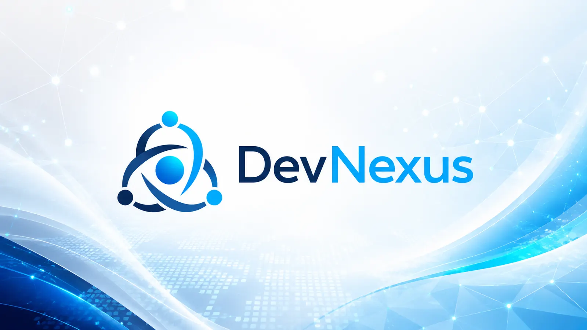
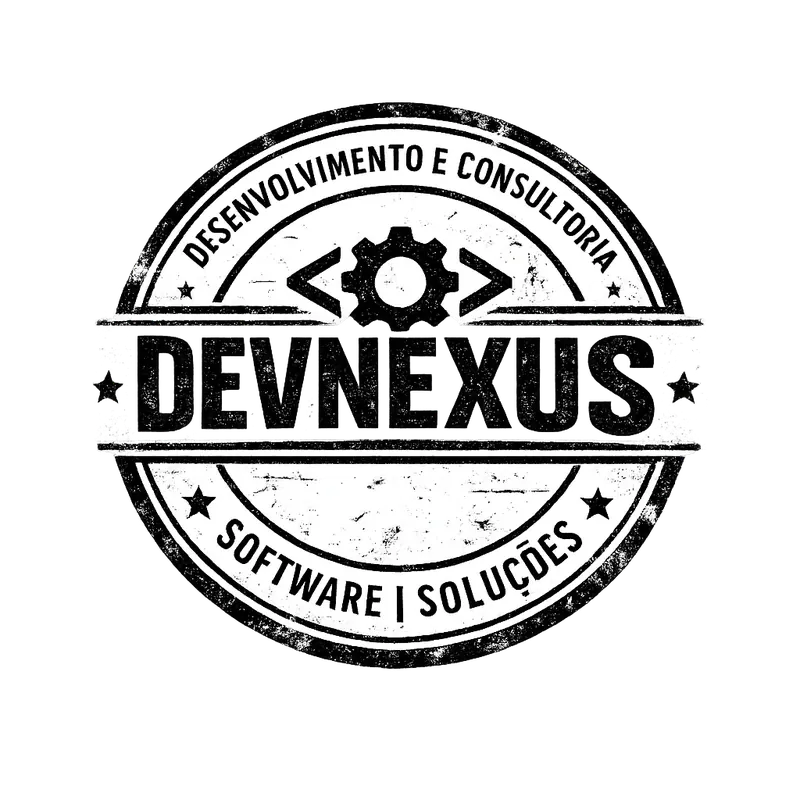

Educação
SIGE, inventário TIC, dados escolares, conectividade, interoperabilidade e capacitação das estruturas educativas.
A DevNexus Digital apoia governos, projectos e organizações públicas na concepção e execução de soluções digitais para educação, saúde, eleições e administração pública.

A DevNexus Digital trabalha na zona onde muitos projectos se perdem: entre a decisão política, o processo administrativo, o dado, a tecnologia e a capacidade real das instituições.
O nosso papel é transformar confusão institucional em arquitectura funcional, documentos técnicos, roteiros de implementação e sistemas digitais que fazem sentido para quem gere e para quem usa.
SIGE, inventário TIC, dados escolares, conectividade, interoperabilidade e capacitação das estruturas educativas.
Digitalização de processos, fluxos de informação, governação de dados e integração entre unidades e serviços.
Gestão segura de dados, rastreabilidade, transparência operacional, auditoria e integridade dos processos eleitorais.
Modernização administrativa, serviços digitais, arquitectura empresarial e reorganização de processos públicos.
Entregamos trabalho que ajuda a decidir, contratar, implementar e sustentar.
Estratégias, modelos de governação, planos de acção, arquitectura institucional e roteiros realistas.
Levantamento de processos, sistemas, dados, infraestruturas, capacidades, riscos e prioridades.
Modelos de dados, catálogos, integração entre sistemas, normas, API, qualidade e responsabilidade institucional.
Requisitos funcionais, especificações técnicas, critérios de aceitação e documentação ao estilo de projectos internacionais.
Formação, manuais, apoio à adopção, procedimentos e reforço das equipas nacionais.
Indicadores, painéis, controlo de execução, melhoria contínua e continuidade operacional.
Não começamos pelo software. Começamos pelo mandato, pelos processos, pelos dados, pelas responsabilidades e pelos riscos. Só depois se desenha a solução.
Alinhamento entre visão, arquitectura, dados e execução.

Envie a mensagem directamente pelo formulário. Não abre Outlook, Gmail nem aplicação de email. A mensagem segue pelo serviço de formulário configurado.